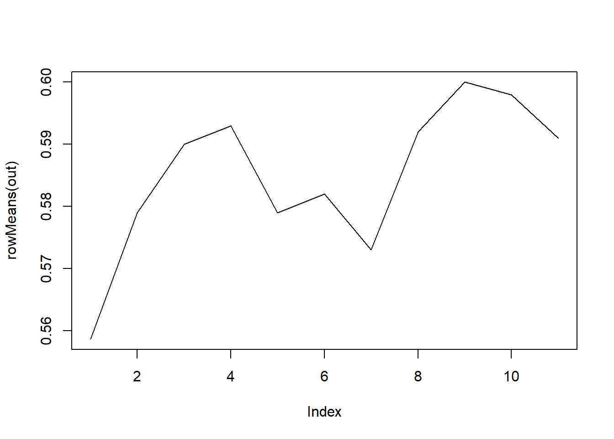
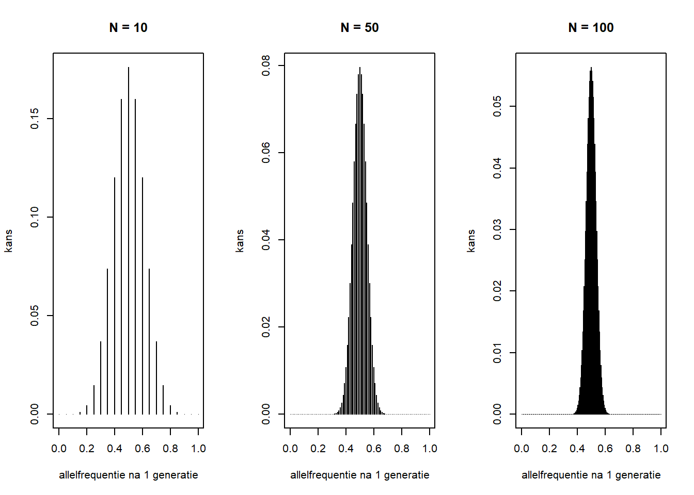
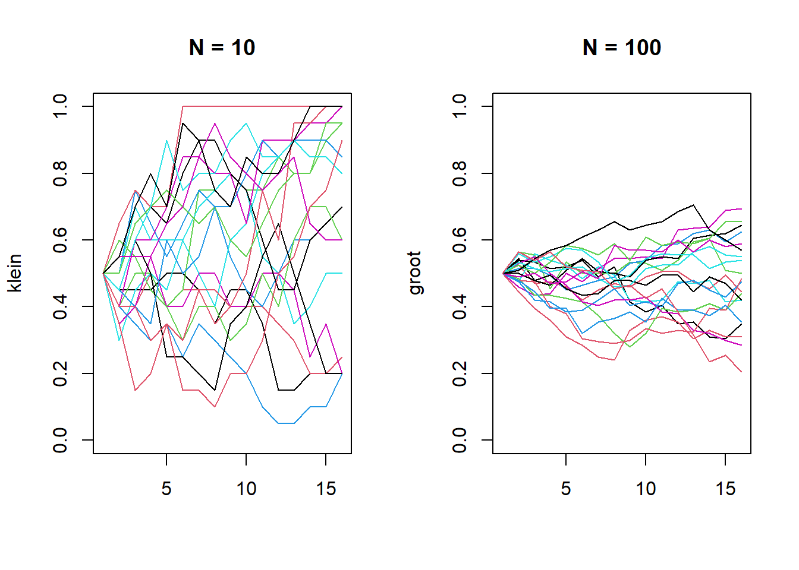

N0 <- 10006 Genetic Drift
[Dit portfolio-onderdeel is nog niet af; deze tekst dient slechts als placeholder]
Bij het vak Evolutiebiologie 1 ben je het Hardy-Weinberg model tegenkomen, dat condities beschrijft waarin de genetische samenstelling van een populatie niet verandert. Hierbij heb je ook al besproken dat geen enkele populatie daadwerkelijk voldoet aan deze condities. In het bijzonder is een voorwaarde voor een Hardy-Weinberg equilibrium dat de populatie oneindig groot is. In de werkelijkheid fluctueren allelfrequenties binnen een populatie door random sampling. Dit noemen we genetic drift. Dit vermindert de genetische variatie binnen een populatie, waarbij kleine populaties gevoeliger zijn voor deze random effecten dan grote populaties.
6.1 Een model voor genetic drift
We werken met een diploïde populatie met grootte \(N0\).We nemen bijvoorbeeld een populatie met 1000 individuen.
Voor een bepaald gen hebben we twee allelen, die we 0 en 1 noemen. De frequentie van allel 0 noemen we \(p_0\) en de frequentie van allel 1 noteren we als \(p_1\).
p0 <- runif(1, min = 0.3, max = 0.7)
p1 <- 1-p0
freq <- c(p0,p1)
freq[1] 0.4413478 0.5586522Om het principe van genetic drift in één generatietijdseenheid van deze populatie te simuleren, bedenken we het volgende:
- De huidige verhouding van allelfrequenties bepaalt de verhouding voor de allelfrequenties in de volgende generatie.
- De populatiegrootte verdubbeld; dat wil zeggen, we gaan van grootte \(N0\) naar grootte \(2N0\).
Als we dan de nieuwe allelfrequenties willen weten, moeten we eerst een van de twee allelen toekennen aan elk lid van de populatie:
gen_nieuw <- sample(c(0,1),
2*N0,
replace = TRUE,
prob = c(p0, p1))Hierbij doen de argumenten van de functie sample het volgende:
- De twee opties waaruit steeds gekozen kunnen worden zijn 0 en 1; dit zijn dus de elementen van de vector \((0,1)\).
- Dit wordt \(2*N0\) keer gedaan; voor elk individu in de volgende generatie.
- Elk allel kan vaker dan één keer toegekend worden (anders kon er hoogstens 2 keer gesampled worden). In code is dit
replace = TRUE. - De kans op allel 0 is gegeven door de huidige frequentie \(p0\) en idem voor allel 1. De vector \((p_0, p_1)\) beschrijft deze kansen.
Omdat we met de getallen 0 en 1 werken, is het aantal individuen met allel 1 in de volgende generatie, precies de som van alle elementen in de vector gen_nieuw. De frequentie bepalen we dan door te schalen met de nieuwe populatiegrootte.
p1_nieuw <- sum(gen_nieuw)/length(gen_nieuw)
p0_nieuw <- 1-p1_nieuw
freq_nieuw <- c(p0_nieuw, p1_nieuw)
freq_nieuw[1] 0.4665 0.5335Het verschil ten opzichte van de frequenties in de vorige populatie kunnen we zien door de vectoren van elkaar af te trekken:
gen_verschil <- freq_nieuw - freq
gen_verschil[1] 0.02515223 -0.02515223Deze simulatie geeft slechts een beperkt beeld van de mogelijkheden weer: het gaan om één populatie en we bekijken één generatietijd. Voor een andere populatie zou de uitkomst van het random samplen heel anders kunnen zijn. Bovendien is het resultaat ook anders als we de code voor dezelfde populatie opnieuw runnen. Ook zouden we geïnteresseerd kunnen zijn in het effect van genetic drift op de langere termijn. We kunnen dus, met dezelfde logica als bovenstaand, een functie bouwen die dit voor een willekeurig aantal populaties en generaties bijhoudt en de simulaties meerdere keren uitvoert:
gendrift <- function(p1, N_pop, N_gen, N_sim){
m <- matrix(0, nrow = N_gen+1, ncol = N_sim)
for(k in 1:N_sim){
v <- c(p1)
for(i in 1:N_gen){
out <- sample(c(0,1), 2*N_pop, replace = TRUE,
prob = c(1-v[i], v[i]))
v[i+1] <- sum(out) / (2*N_pop)
}
m[,k] <- v
}
return(m)
}Vraag 6.1 Leg bovenstaande code in woorden uit.
We kunnen deze functie bijvoorbeeld als volgt gebruiken:
out <- gendrift(p1,100,10,5)
out [,1] [,2] [,3] [,4] [,5]
[1,] 0.5586522 0.5586522 0.5586522 0.5586522 0.5586522
[2,] 0.5800000 0.5700000 0.6300000 0.5250000 0.5900000
[3,] 0.5650000 0.5500000 0.6250000 0.6050000 0.6050000
[4,] 0.5850000 0.5100000 0.6900000 0.5850000 0.5950000
[5,] 0.5400000 0.4700000 0.7700000 0.5450000 0.5700000
[6,] 0.5650000 0.5050000 0.7700000 0.5200000 0.5500000
[7,] 0.5500000 0.4800000 0.7300000 0.5200000 0.5850000
[8,] 0.6050000 0.5100000 0.7800000 0.5250000 0.5400000
[9,] 0.6550000 0.5200000 0.8100000 0.4700000 0.5450000
[10,] 0.6400000 0.5100000 0.8300000 0.4650000 0.5450000
[11,] 0.6450000 0.4250000 0.8550000 0.4600000 0.5700000We krijgen dus een matrix waarin we de frequentie van allel 1 over de generaties heen (rijen) zien voor elke populatie (kolommen).
Vraag 6.2 Maak een figuur waarin voor elke populatie de frequentie van allel 1 over tijd wordt weergegeven. Gebruik de functie matplot().
# Jouw antwoordIn de plot die je hebt gemaakt, zie je dat de trajecten erg anders kunnen lopen door de random effecten. We merken het volgende op:
De veranderingen in de allelfrequenties zijn random: de populaties begonnen met de zelfde beginconditie en hebben gedurende het proces dezelfde grootte
Fixatie kan optreden: het is mogelijk dat een van de allelen volledig verdwijnt (pas eventueel p0 en p1 handmatig aan om dit te zien)
Er is geen factor die er voor zorgt dat een allelfrequentie constant toe- of afneemt.
We kunnen ook de gemiddelde allelfrequentie per generatie plotten:
plot(rowMeans(out), type = "l")
Vraag 6.3 Als het goed is, is dit nagenoeg constant (verander de y-as met ylim() indien nodig). Leg uit waarom dat ook te verwachten is.
6.2 Het effect van de populatiegrootte
Aan het begin van dit hoofdstuk stelden we dat kleine populaties gevoeliger zijn voor genetic drift dan grote populaties. Dit ga je nu zelf ondervinden.
6.2.1 De binomiale kansverdeling
In Vraag 6.1 heb je het idee achter de simulatie al uitgelegd: je trekt \(2N\) keer onafhankelijk een allel, met steeds dezelfde kans \(p_1\) op allel 1. Dit proces volgt een binomiale verdeling, die het aantal successen beschrijft in \(n\) onafhankelijke pogingen, elk met dezelfde kans \(p\) op succes (denk aan het aantal keer “kop” bij \(n\) muntopgooien, of, zoals hier, het aantal kopieën van allel 1 bij \(n\) onafhankelijke allel-trekkingen). De kans op precies \(k\) successen is:
\[P(X=k) = \binom{n}{k} p^k (1-p)^{n-k} \tag{6.1}\]
waarbij \(\binom{n}{k}\) het aantal manieren telt waarop je \(k\) successen over \(n\) pogingen kunt verdelen. Een binomiale verdeling heeft twee parameters, \(n\) en \(p\), en daaruit volgen direct het gemiddelde (\(np\)) en de variantie (\(np(1-p)\)).
In onze context: elke allel-trekking is een “poging” met kans \(p_1\) op allel 1, en er zijn \(n=2N\) onafhankelijke trekkingen per generatie (één per allel-kopie in de populatie). Het aantal kopieën van allel 1 in de nieuwe generatie, dat we sum(out) noemen, is dus een stochastische variabele die \(\text{Binom}(2N, p_1)\) volgt.
Vergelijk dit met wat je helemaal aan het begin van het jaar hebt gezien, in Chapter 1 en Appendix A: het aantal kopieën van allel 1 heeft, net als de \(\chi^2\)-waarde daar, alle drie de kenmerken van een stochastische variabele, namelijk: een kansverdeling, een waarde die pas na “uitvoering van het experiment” (hier het samplen van een generatie) vaststaat, en inherente onzekerheid. De onderliggende verdeling is anders, omdat het achterliggende stochastische proces anders is.
Omdat er \(2N+1\) mogelijke uitkomsten zijn voor het aantal kopieën allel 1 (van 0 tot \(2N\)), zijn er ook precies \(2N+1\) mogelijke waarden voor de nieuwe allelfrequentie: \(0, \frac{1}{2N}, \frac{2}{2N}, \ldots, \frac{2N-1}{2N}, 1\). Het samenstellen van een nieuwe generatie komt dus neer op het trekken van één enkele waarde uit deze \(2N+1\) mogelijkheden, met kansen die door de binomiale verdeling worden bepaald.
Vraag 6.4 Je weet dat \(X = \text{sum(out)} \sim \text{Binom}(2N, p_1)\), met variantie \(\text{Var}(X) = np(1-p)\) (met \(n=2N\), \(p=p_1\)).
(a) Schrijf de nieuwe allelfrequentie \(p_1'\) als een constante maal \(X\).
(b) Gebruik de rekenregel \(\text{Var}(aX) = a^2\text{Var}(X)\) om hieruit een uitdrukking voor \(\text{Var}(p_1')\) af te leiden, in termen van \(N\) en \(p_1\).
(c) Wat gebeurt er met deze variantie als \(N\) groter wordt? Wat betekent dat voor hoeveel de allelfrequentie van generatie op generatie kan schommelen in een kleine, versus een grote, populatie?
Jouw antwoord
We kunnen het bovenstaande ook nagaan met een simulatie.
par(mfrow = c(1,3))
N_vals <- c(10, 50, 100)
for (N in N_vals) {
k <- 0:(2*N)
allelfreq <- k / (2*N)
kansen <- dbinom(k, size = 2*N, prob = 0.5)
plot(allelfreq, kansen, type = "h",
main = paste("N =", N),
xlab = "allelfrequentie na 1 generatie",
ylab = "kans", xlim = c(0,1))
}
Vraag 6.5 Vergelijk de drie plots. Wat gebeurt er met de breedte van de verdeling (rond de piek bij 0.5) als \(N\) toeneemt? Komt dit overeen met de variantie die je bij Vraag 6.4 hebt afgeleid?
Jouw antwoord
In onderstaande code simuleren we twee populaties, die alleen in grootte verschillen. Voor beide populaties bekijken we 15 generaties en simuleren we 20 scenarios.
klein <- gendrift(0.5, 10, 15, 20)
groot <- gendrift(0.5, 100, 15, 20)
par(mfrow = c(1,2))
matplot(klein, ylim = c(0,1),
type = "l", lty = 1, main = "N = 10")
matplot(groot, ylim = c(0,1),
type = "l", lty = 1, main = "N = 100")